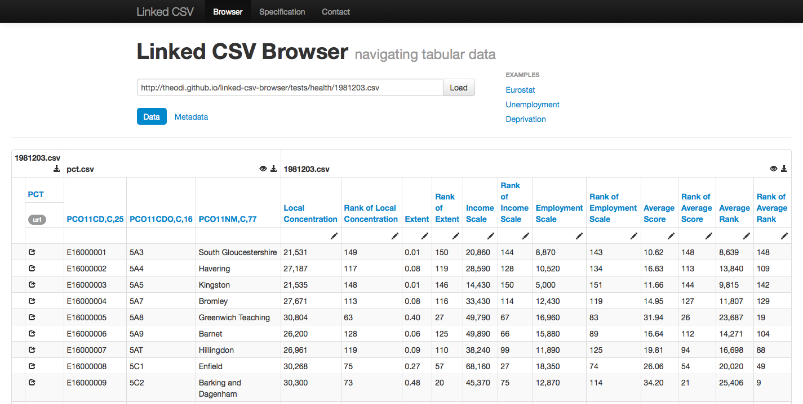
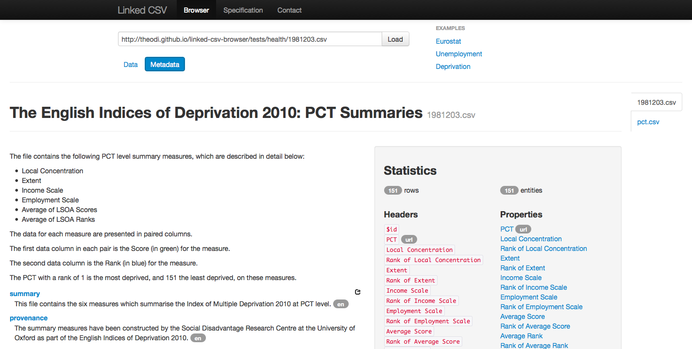

An Introduction to the Open Data Institute
Dr Tom Heath · Head of Research · Open Data Institute
@tommyhYou can access the slides at http://theodi.github.io/presentations/.
Use arrows to navigate. Press 'f' for fullscreen. Press the Escape key to see all slides.
Open Data
Open Data Definitions
A piece of data or content is open if anyone is free to use, reuse, and redistribute it — subject only, at most, to the requirement to attribute and/or share-alike.
Open Data Definitions
Open data is information that is available for anyone to use,
for any purpose,
at no cost
Open Data
must be explicitly licensed
the license may impose additional conditions
e.g. attribution, share-alike
!= all the data on the Web
About the Open Data Institute
The Open Data Institute
- founded in 2012
by Tim Berners-Lee and Nigel Shadbolt - non-profit, non-partisan company
limited by guarantee - dedicated to
unlocking supply of and demand for open data
communicating its value
ODI Funding
- partly funded by, but independent from, government
- additional income from
philanthropic donations,
membership programme,
research grants, training
ODI Members
- Virgin Media
large cable telco - Which?
large consumer organisation - another big UK telco
- and recently...
Quanta Computer - ...plus many others
ODI Scope
based in east london...

photo by Daniel Lövquist, used under license CC BY-NC 2.0
ODI Scope
- ...but national remit
- global leadership position in open data
ODI Activities
- training
- tools and services
- startups
- policy
- research
ODI Startups
- 9-month startup programme
- we offer
desk and meeting space
mentoring and networking - domains
big data, transport, energy and environment, corporate data, ...
Startup Stories

ODI Ethos
- everything in the open
- principles
- dashboard
- github
- pinboard
- #theodi on irc.freenode.net
- more info
Research at the ODI
- very new, still forming
- building capability at the ODI
- forging strong collaborations in the UK and overseas
Current Research
- what are the best practices for publishing big (open) data?
- how are data sets currently described on the Web?
- how can we best extract (and aggregate) these descriptions?
- (open data certificates as a driver)
Tabular Data on the Web
the problems
- Excel is too flexible
- CSV lacks metadata
- RDF formats are too verbose
Tabular Data on the Web
the proposals
- Google's Dataset Publishing Language (DSPL)
- zip of CSVs + XML metadata
- OKFN's Simple Data Format (SDF)
- zip of CSVs + JSON metadata
- Jeni's Linked CSV
- conventions for embedding metadata in CSV
- schema.org approach
- HTML page with embedded markup describing CSVs
Tabular Data on the Web
Linked CSV Browser - Data
Tabular Data on the Web
Linked CSV Browser - Metadata
Data Ecosystem
How do licensing choices affect the data ecosystem?
What kind of licence is best for government to choose?
Data Ecosystem
Simulation with D3

Upcoming
Research Projects
- monitoring and analytics for open data deployment across Europe
- radically simplifying the consumption of open data by small businesses
The Big Picture
- the mechanics of open data
- the impact of open data
- the web of open data
The Mechanics of
Open Data
- provenance: collection protocol, documentation, granularity, post-processing?
- licensing: adequacy of licensing regime? combining licenses? specifics of derivation? mechanics of expression?
- versioning: conceptual models of versioning? infrastructure?
- dataset description: how to convey these features (for potentially small fragments)?
The Impact of Open Data
- data ecosystems: what impact of open licensing?
- structural business and economic barriers to uptake of open data?
- qualitative stories of impact
The Web of Open Data
- data discovery
- profiling and indexing
- relevance and filtering
- integration
- dynamic interfaces
Data Discovery
appropriate granularity?
meaningful definitions of collections?
(theoretical and practical)
prioritising discovery?
Data Comprehension
profiling
summarisation
indexing
cognitive architecture?
Questions?
Dr Tom Heath · Open Data Institute
tom.heath@theodi.org